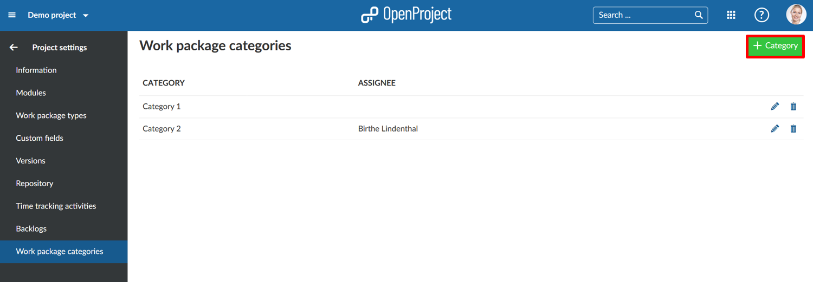
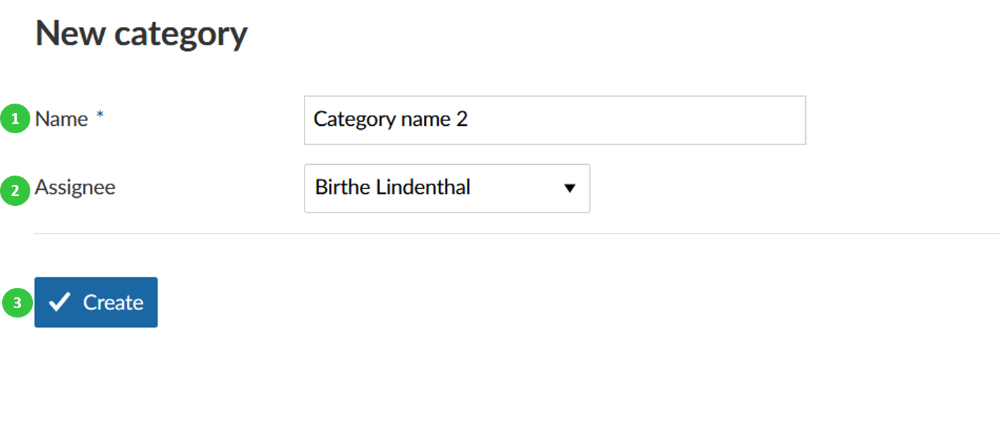
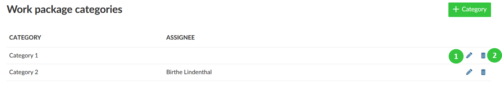

In the work package forms you have the default attribute to select work package categories to differentiate work packages, filter, and group by certain attributes.
You can manage these work package categories in the -> Project settings -> Work package categories.
Press the green + Category button to create a new category for a project.

You can enter the following information.

From the list of categories you can choose a category to edit or delete.
Press the edit button to make changes to a category.
Press the delete button to delete a category.
